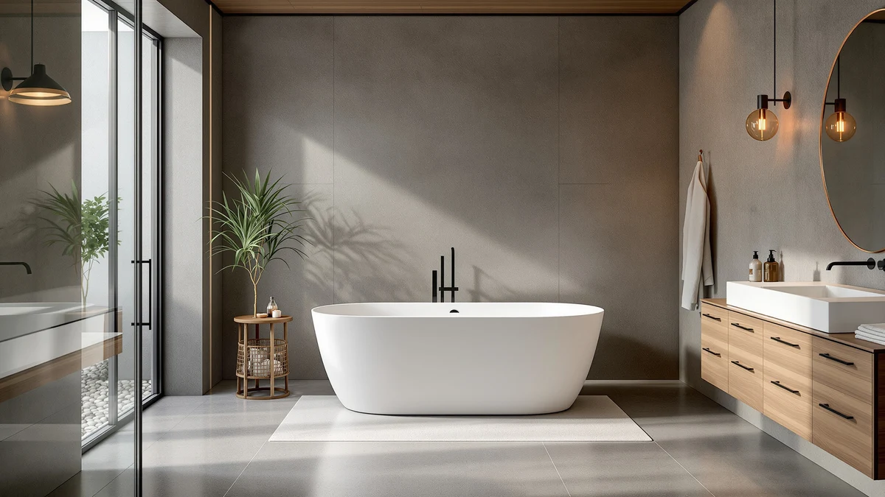

WOODBRIDGE 67 " Freestanding Review (2026): Worth It?
Prices and picks verified as of September 2026. Independent, reader-supported reviews.


Quick Answer
The WOODBRIDGE 67 " Freestanding White is a straightforward pick if you want a 67-inch soaking tub from a brand with two other tubs in this comparison. It costs $16 to $20 more than the alternatives here, and that premium buys the white finish and WOODBRIDGE's track record rather than any documented spec advantage.
Our pick: WOODBRIDGE 67 " Freestanding White, $789.00 Check Price on Amazon
Bottom line: our top pick is the WOODBRIDGE 67 " Freestanding White Acylic Soaking Bathtub at $789.
Things to Know Before You Buy
- This Woodbridge 67 " freestanding review compares the WOODBRIDGE 67" Freestanding White against three close alternatives on price, size, and brand lineup.
- At $789.00, it's the most expensive of the four tubs compared here, running $16 to $20 more than the GarveeTech, WOODBRIDGE 71" Acrylic, and WOODBRIDGE 67" Acrylic options.
- Three of the four tubs in this comparison, including this one, come from WOODBRIDGE, so you're largely choosing between finishes and lengths within the same manufacturer's lineup.
- The listing doesn't name the shell material the way its WOODBRIDGE 67" Acrylic sibling does, so confirm that detail with the seller if it matters for your bathroom.
- Freestanding tubs leave supply and drain lines exposed, so measure your rough-in before ordering rather than assuming it matches an old alcove tub.
This Woodbridge 67 " freestanding review looks at whether WOODBRIDGE's white freestanding soaking tub earns its $789.00 price tag next to three close competitors, two of which come from the same manufacturer. If you're replacing an alcove tub or finishing a new bathroom, the 67-inch footprint is a common size, and this tub shares that length with one of its own WOODBRIDGE siblings.
The short version: this tub costs more than every alternative in this comparison, and the extra money buys a white finish and a spot in WOODBRIDGE's established freestanding lineup rather than a documented upgrade in material or capacity. If price is your deciding factor, the WOODBRIDGE 67" Acrylic tub covered below matches this one's length for $20.00 less.
Why You Should Trust Us
Ilane Tall covers freestanding tubs and bathroom fixtures for this site, from budget-friendly soaking tubs to premium models that cost several times more. For this Woodbridge 67 " freestanding review, we compared WOODBRIDGE's published listing details against three close alternatives, cross-checked current Amazon pricing across all four tubs, and weighed what each one's brand history and documentation tell you before you buy.
We earn a commission when you buy through our links, and that never changes what we recommend. When a tub costs more without a documented reason, like this one does next to its own WOODBRIDGE sibling, we say so directly instead of glossing over it.
Our Research Process
Our research process for this Woodbridge 67 " freestanding review started with the numbers every buyer can verify independently: current Amazon pricing, the length listed for each tub, and the brand behind each listing. Three of the four tubs compared here carry the WOODBRIDGE name, which let us compare this White model directly against its own 67-inch and 71-inch siblings rather than guessing how it stacks up against an unrelated brand.
We also looked at what each listing does and doesn't disclose. The WOODBRIDGE 67" Acrylic alternative names its shell material outright, while this White model's listing leaves that detail blank, a gap worth noting for anyone comparing the two side by side. Reviewers shopping this category consistently look for that kind of documentation before paying a premium, and we treated its absence here as a legitimate point of comparison rather than an assumption in either direction.
Overview & Specs

WOODBRIDGE 67 " Freestanding White
What we like
- Comes from WOODBRIDGE, the same brand behind two of the other three tubs in this comparison, so you're buying into a lineup with more than one data point behind it
- The 67-inch length matches the WOODBRIDGE 67" Acrylic alternative exactly, fitting the same rough-in and floor space many standard freestanding installs are already plumbed for
- A clean white finish that matches neutral bathroom fixtures without the styling risk of a colored or matte-black tub
Flaws but not dealbreakers
- At $789.00, it's the most expensive tub in this comparison, running $16 to $20 more than the GarveeTech and WOODBRIDGE alternatives below
- Unlike its WOODBRIDGE 67" Acrylic sibling, this listing doesn't name the shell material outright, so confirm that detail with the seller before you buy if it matters to you
- Freestanding tubs like this one leave supply and drain lines exposed, so measure your rough-in before ordering rather than assuming it will match an old alcove tub
| Material | — |
| Size | 67 Inch |
The WOODBRIDGE 67 " Freestanding White builds its case on brand familiarity rather than a standout spec. At 67 inches long, it shares its footprint with the WOODBRIDGE 67" Acrylic tub covered later in this Woodbridge 67 " freestanding review, and both carry the same manufacturer name, which matters if you're trying to gauge build quality from a company's overall track record instead of a single listing. The white finish is a safe, neutral choice that works with most existing fixtures, and at $789.00 it sits at the top of the price range among the four tubs compared here.
What the listing doesn't do is spell out the shell material the way its own 67-inch Acrylic sibling does, which is the clearest gap between the two nearly identical tubs. You're paying $20.00 more for a tub of the same length from the same brand, without a documented reason for the difference beyond the color. That makes this model a reasonable choice if white is the finish your bathroom needs, but a harder sell if you're comparing purely on price and documentation.
What We Liked
Brand consistency is the strongest point in this WOODBRIDGE 67 " freestanding review. Three of the four tubs compared here carry the WOODBRIDGE name, which means you're not stacking one unfamiliar brand against another. If you like how the WOODBRIDGE 71" or WOODBRIDGE 67" Acrylic alternatives are built, this White model comes from the same manufacturer and the same general design approach.
The 67-inch length also works in its favor. It matches the WOODBRIDGE 67" Acrylic tub exactly, so if your bathroom's rough-in was measured for a 67-inch freestanding tub, either one drops into that same space without extra plumbing work. The white finish rounds things out as a low-risk choice that pairs with most existing fixtures and hardware finishes, and it won't clash with the drain and overflow hardware you already own or plan to buy separately.
What Could Be Better
Price is the clearest drawback. At $789.00, this tub costs $16.12 more than the GarveeTech, $17.42 more than the WOODBRIDGE 71" Acrylic, and a full $20.00 more than the WOODBRIDGE 67" Acrylic, which matches its length exactly. None of those alternatives is a different brand tier, so the premium here is harder to justify on paper, and the current listing gives buyers little else to point to beyond the color.
Documentation is the other gap. The specs table for this listing doesn't name a shell material, while its closest sibling, the WOODBRIDGE 67" Acrylic, states its construction directly. If you're the kind of buyer who wants every spec confirmed before ordering, that missing line is worth a message to the seller before you check out, and it's a reasonable reason to hold off if the seller can't answer quickly.
Who Is It For?
This tub makes sense if the white finish is non-negotiable for your bathroom and you'd rather stick with a name-brand tub than shop an unfamiliar manufacturer. It also suits a buyer who has already measured for a 67-inch freestanding tub and wants the WOODBRIDGE name specifically, regardless of the small premium.
Skip it if price and documentation matter more to you than the finish. The WOODBRIDGE 67" Acrylic tub covered in the alternatives below matches this one's length, comes from the same brand, states its shell material outright, and costs $20.00 less, making it the harder-to-beat option for most budgets. And if you need a longer soak and can spare the extra floor space, the WOODBRIDGE 71" Acrylic is worth comparing before you commit to either 67-inch option.
Alternatives to Consider
If the WOODBRIDGE 67 " Freestanding White's price rules it out, the other three tubs in this comparison each undercut it while matching it on length, brand, or both.

Editor's Pick
GarveeTech 67 Inch Freestanding Bathtub
The GarveeTech is the only tub in this comparison that isn't a WOODBRIDGE, and at $772.88 it undercuts the WOODBRIDGE 67" Freestanding White by $16.12 while matching its 67-inch length exactly. The listing doesn't publish the same brand history as the three WOODBRIDGE tubs here, so weigh that tradeoff against the savings if brand reputation matters to your purchase. For a shopper who wants the same footprint for less and isn't set on a specific manufacturer, the GarveeTech is worth a look.
$772.88
Check Price on Amazon
Best Value
WOODBRIDGE 71" Acrylic Freestanding Bathtub
The WOODBRIDGE 71" Acrylic is four inches longer than the tub reviewed here, and its listing names its acrylic shell outright, a detail the White model's page leaves blank. At $771.58 it also costs $17.42 less. If your bathroom has the extra floor space, the added length and clearer documentation make this the stronger buy for a taller bather without leaving the WOODBRIDGE lineup.
$771.58
Check Price on Amazon
Premium Choice
WOODBRIDGE 67" Acrylic Freestanding Bathtub
This is the closest match to the WOODBRIDGE 67" Freestanding White in this comparison: same 67-inch length, same WOODBRIDGE brand, and a listing that names its acrylic shell where the White model's does not. At $769.00, it's also the least expensive tub here, $20.00 under the model reviewed above. Unless the white finish is specifically what you need, this Acrylic version is the harder option to argue against on price and documentation alone.
$769.00
Check Price on AmazonHow big is the WOODBRIDGE 67 " Freestanding White tub?
The WOODBRIDGE 67 " Freestanding White measures 67 inches, the same length as the WOODBRIDGE 67" Acrylic alternative in this comparison and four inches shorter than the WOODBRIDGE 71" option.
Is the WOODBRIDGE 67 " freestanding tub worth the extra cost over the alternatives?
At $789.00 it costs $16 to $20 more than the three alternatives in this comparison.
Frequently Asked Questions
How big is the WOODBRIDGE 67 " Freestanding White tub?
The WOODBRIDGE 67 " Freestanding White measures 67 inches, the same length as the WOODBRIDGE 67" Acrylic alternative in this comparison and four inches shorter than the WOODBRIDGE 71" option. The listing does not publish gallon capacity or depth figures, so confirm those measurements with the seller if your bathroom has tight clearances.
Is the WOODBRIDGE 67 " freestanding tub worth the extra cost over the alternatives?
At $789.00 it costs $16 to $20 more than the three alternatives in this comparison. The premium mainly buys the white finish and WOODBRIDGE's established freestanding tub lineup rather than any documented upgrade in material or capacity, so budget-focused shoppers may prefer the cheaper WOODBRIDGE 67" Acrylic sibling instead.
What is the difference between the WOODBRIDGE 67" Freestanding White and the WOODBRIDGE 67" Acrylic Freestanding Bathtub?
Both share the same 67-inch length and the same WOODBRIDGE brand, but the Acrylic version names its shell material directly in the listing and costs $20.00 less at $769.00. If the two are otherwise comparable for your bathroom, the Acrylic model is the better-documented, lower-priced choice.
Final Verdict
This Woodbridge 67 " freestanding review comes down to a simple tradeoff: the WOODBRIDGE 67 " Freestanding White gives you a 67-inch soaking tub with a clean white finish from an established manufacturer, but it costs $16 to $20 more than three close alternatives without a documented spec to justify the gap. If the white finish is what your bathroom needs, it's a reasonable buy backed by WOODBRIDGE's broader lineup. If price and documentation matter more, the WOODBRIDGE 67" Acrylic tub covered above matches its length for $20.00 less.